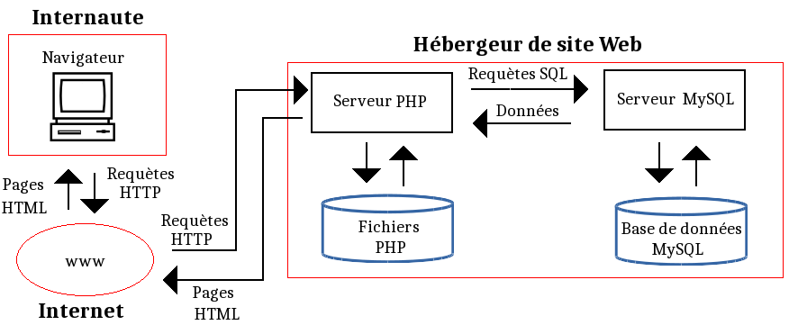

BASES DE DONNES
Tout ce qui te faut pour devenir le meilleur en Bases de Données !
Tout ce qui te faut pour devenir le meilleur en Bases de Données !
MySQL est un serveur de bases de données relationnelle, libre et open source, distribué sous licence GNU (GPL). Une Base de Données relationnelle est une Base de Données dans laquelle les informations sont placées dans des tableaux à deux dimensions appelés tables.
MySQL et PHP sont souvent utilisés ensemble et font partie des offres d'hébergement proposées par les hébergeurs de sites Web.
MySQL permet, au sein d'une même base, d'utiliser des moteurs différents pour différentes tables. Parmi les nombreux moteurs existants, on rencontre notamment les moteurs MyISAM, InnoDB, CSV...
CSV est un moteur qui utilise des fichiers textes au format CSV pour stocker les données.
phpMyAdmin est un outil proposé par les hébergeurs (dans leurs offres d'hergement de sites web) qui permet de gérer facilement depuis le navigateur de l'internaute, à l'aide d'une interface graphique, les bases MySQL qui font partie de l'offre d'hébergement.
Lorsque l'internaute envoie une requête HTTP à internet (quand il appelle une page web depuis son navigateur), internet transmet cette requête au serveur PHP de l'hébergeur qui héberge cette page. Le serveur PHP de l'hébergeur récupère alors la page correspondante. Si celle-ci est écrite en langage PHP, il la transforme en langage HTML avant de la renvoyer sinon il la renvoi telle quelle. Si le code PHP de la page contient des requêtes MySQL, le serveur PHP adresse ces requêtes au serveur MySQL concerné qui (selon la requête) écrit ou lit dans la base de données et renvoi au serveur PHP les données demandées. Le serveur PHP met alors la réponse sous forme HTML et l'envoie à l'internaute. Le schéma suivant illustre ce fonctionnement d'ensemble.
|
Pour obtenir la liste des tables : SELECT nom_du_champ FROM nom_table |
Pour explorer une table : SELECT nom_du_champ FROM nom_table |
|
Pour réaliser une jointure entre deux tables : SELECT * FROM nom_table JOIN table ON table.id |
Pour filtrer les données : SELECT nom_du_champ FROM nom_table WHERE condition |
|
Pour trier les résultats par ordre croissant : SELECT colonne1, colonne2 FROM nom_table ORDER BY colonne1 ASC ; |
Pour trier les résultats par ordre décroissant : SELECT colonne1, colonne2 FROM nom_table ORDER BY colonne1 DESC ; |
|
Pour obtenir la description d'une table : DESC table ; |
|
|
Création d’une table nommée « chaise » dans la base de données : CREATE TABLE chaise |
Suppression de la table : DROP TABLE nom_table |
|
Insertion d’un enregistrement dans une table : INSERT INTO nom_table VALUES ('valeur1', 'valeur2', ...) |
Modification d’une ou plusieurs valeurs attributs : UPDATE nom_table SET nom_colonne1 = 'nouvelle valeur' WHERE condition |
|
Suppression d’un enregistrement dans une table : DELETE FROM nom_table WHERE condition |
Sélection d’un ou plusieurs attributs dans une table : SELECT nom_du_champ FROM nom_table |
|
Classification des données selon un ou plusieurs attributs : SELECT colonne1, colonne2 FROM nom_table ORDER BY colonne1 |
Suppression des doublons sur un attribut : SELECT DISTINCT ma_colonne FROM nom_table |
|
Pour changer l’adresse mail de l’enregistrement dont l’id est 1 : UPDATE nom_table SET email ... WHERE id=1 |
Jointure interne : SELECT * FROM table1 INNER JOIN table2 ON table1.id |
|
Jointure externe : SELECT * FROM table1 [LEFT|RIGHT] OUTER JOIN table2 ON table1.id |
Produit cartésien : SELECT * FROM table1 CROSS JOIN table2 |
|
Compter : SELECT COUNT nom_colonne AS nom_colonne FROM nom_table WHERE condition |
Ajouter : SELECT SUM nom_colonne AS nom_colonne FROM nom_table |
|
Effectuer une moyenne : SELECT AVG nom_colonne AS nom_colonne FROM nom_table |
Maximum et minimum : SELECT MIN nom_colonne AS nom_colonne MAX nom_colonne AS nom_colonne FROM nom_table |
Une requête SQL affiche les contenus de champs qui appartiennent à des tables pour les afficher selon certains critères.
SELECT ... FROM ...Cette requête va sélectionner (SELECT) le champ "nom_du_champ" provenant (FROM) du tableau appelé "nom_du_tableau". SELECT nom_du_champ FROM nom_table |
SELECT DISTINCT ...Cette requête sélectionne le champ "ma_colonne" de la table "nom_du_tableau" en évitant de retourner des doublons. SELECT DISTINCT ma_colonne FROM nom_table |
... AS ...Cette requête permet de renommer le nom d'une colonne. SELECT colonne1 AS c1, colonne2 FROM nom_table |
... AS ...Cette requête permet de renommer le nom d'une table. SELECT * FROM nom_table AS t1 |
WHERE ...Cette requête permet d’extraire les lignes d’une base de données qui respectent une condition. Cela permet d’obtenir uniquement les informations désirées. SELECT nom_du_champ FROM nom_table WHERE condition |
WHERE ... AND ...L’opérateur AND permet de s’assurer que la condition1 ET la condition2 sont vrai : SELECT nom_colonnes FROM nom_table WHERE condition1 AND condition2 |
WHERE ... OR ...L’opérateur OR vérifie que la condition1 OU la condition2 est vrai : SELECT nom_colonnes FROM nom_table WHERE condition1 OR condition2 |
WHERE ... AND & OR ...Ces opérateurs peuvent être combinés à l’infini ou mélangés. L’exemple ci-dessous filtre les résultats de la table "nom_table" si condition1 ET condition2 OU condition3 est vrai : SELECT nom_colonnes FROM nom_table WHERE condition1 AND (condition2 OR condition3) |
WHERE ... IN ...Pour chercher toutes les lignes où la colonne "nom_colonne" est égale à ‘valeur1’ OU ‘valeur2’. SELECT nom_colonne FROM nom_table WHERE nom_colonne IN (valeur1, valeur2, ...) |
WHERE ... BETWEEN ...Cette requête retourne toutes les lignes dont la valeur de la colonne "nom_colonne" sera comprise entre ‘valeur1’ et ‘valeur2’. SELECT * FROM nom_table WHERE nom_colonne BETWEEN ‘valeur1’ AND ‘valeur2’ |
WHERE ... LIKE ...Cette requête permet d’effectuer une recherche sur un modèle particulier. Il est par exemple possible de rechercher les enregistrements dont la valeur d’une colonne commence par telle ou telle lettre. SELECT * FROM nom_table WHERE nom_colonne LIKE ‘modele’ |
WHERE ... IS NULLPour filtrer les résultats où les champs d’une colonne sont à null : SELECT * FROM nom_table WHERE nom_colonne IS NULL |
WHERE ... IS NOT NULLPour filtrer les résultats et obtenir uniquement les enregistrements qui ne sont pas null : SELECT * FROM nom_table WHERE nom_colonne IS NOT NULL |
GROUP BY …Cette requête permet de grouper plusieurs résultats et utiliser une fonction de totaux sur un groupe de résultat : SELECT colonne1, nom_function(colonne2) FROM nom_table GROUP BY colonne1 Les autres fonctions de statistiques du GROUPE BY sont ici ! |
HAVING ...Cette requête permet de SÉLECTIONNER les colonnes DE la table "nom_table" en GROUPANT les lignes qui ont des valeurs identiques sur la colonne "colonne1" et que la condition de HAVING soit respectée. SELECT colonne1, SUM(colonne2) FROM nom_table GROUPE BY colonne1 HAVING fonction(colonne2) operateur valeur |
ORDER BY ...Cette requête permet de trier les lignes. Il est possible de trier les données sur une ou plusieurs colonnes, par ordre ascendant ou descendant. SELECT colonne1, colonne2 FROM nom_table ORDER BY colonne1 DESC/ASC |
LIMIT ...Cette requête est utilisée pour spécifier le nombre maximum de résultats que l’on souhaite obtenir. Cette requête est souvent associée à un OFFSET, c’est-à-dire effectuer un décalage sur le jeu dé résultat. Ces deux requête ne permettent pas exemple d’effectuer des système de pagination (récupérer les 10 articles de la page 4). SELECT * FROM nom_table LIMIT 10 La requête LIMIT est souvent associée à un OFFSET, c’est-à-dire effectuer un décalage sur le jeu de résultat. Ces deux requête ne permettent pas exemple d’effectuer des système de pagination (récupérer les 10 articles de la page 4). SELECT * FROM nom_table LIMIT 10 OFFSET 5 Le premier nombre est l’OFFSET tandis que le suivant est la limite. SELECT * FROM nom_table LIMIT 5, 10 |
CASE ... WHEN ...Cette requête permet d’utiliser des conditions de type "si / sinon" (if / else) similaire à un langage de programmation pour retourner un résultat disponible entre plusieurs possibilités. Le CASE peut être utilisé dans n’importe quelle instruction ou requête, telle que SELECT, UPDATE, DELETE, WHERE, ORDER BY ou HAVING. Comparer une colonne à un set de résultat : CASE a WHEN 1 THEN ‘un’ WHEN 2 THEN ‘deux’ WHEN 3 THEN ‘trois’ ELSE ‘autre’ END Élaborer une série de conditions booléennes pour déterminer un résultat : CASE WHEN a=b THEN ‘A égal à B’ WHEN a>b THEN ‘A supérieur à B’ ELSE ‘A inférieur à B’ END |
... UNION ...Cette commande permet de mettre bout-à-bout les résultats de plusieurs requêtes utilisant elles-mêmes la commande SELECT. C’est donc une commande qui permet de concaténer les résultats de deux requêtes ou plus. Pour l’utiliser, il est nécessaire que chacune des requêtes à concaténer retournes le même nombre de colonnes, avec les mêmes types de données et dans le même ordre. SELECT * FROM table1 UNION SELECT * FROM table2 |
... UNION ALL ...Cette commande permet de concaténer les enregistrements de plusieurs requêtes, à la seule différence que cette commande permet d’inclure tous les enregistrements, même les doublons. Ainsi, si un même enregistrement est présent normalement dans les résultats des deux requêtes concaténées, alors l’union des deux avec UNION ALL retournera deux fois ce même résultat. SELECT * FROM table1 UNION ALL SELECT * FROM table2 |
... INTERSECT ...Cette commande permet d’obtenir l’interdiction des résultats de deux requêtes. Cette commande permet donc de récupérer les enregistrements communs à deux requêtes. Cela peut s’avérer utile lorsqu’il faut trouver s’il y a des données similaires sur deux tables distinctes. SELECT * FROM table1 INTERSECT SELECT * FROM table2 |
... EXCEPT ...Cette commande permet de récupérer les enregistrements de la première instruction sans inclure les résultats de la seconde requête. Si un même enregistrement devait être présent dans les résultats des deux syntaxes, ils ne seront pas présents dans le résultat final. SELECT * FROM table1 EXCEPT SELECT * FROM table2 |
INSERT INTO ...Cette commande permet au choix d'inclure une seule ligne à la base existante ou plusieurs lignes d'un coup. Deux commandes possibles : Insérer une ligne en indiquant les informations pour chaque colonne existante (en respectant l'ordre). INSERT INTO nom_table VALUES (‘valeur1’, ‘valeur2’...) Insérer une ligne en spécifiant les colonnes que vous souhaiter compléter. INSERT INTO nom_table (nom_colonne1, nom_colonne2, ...) VALUES (‘valeur1’, ‘valeur2’, ...) |
ON DUPLICATE KEY UPDATE ...Cette commande permet de mettre à jour des données lorsqu'un enregistrement existe déjà dans une table. INSERT INTO nom_table (nom_col1, nom_col2, ...) VALUES (‘valeur1’, ‘valeur2’, ...) ON DUPLICATE KEY UPDATE nom_col1=nom_col1+val1 WHERE nom_colonne BETWEEN ‘valeur1’ AND ‘valeur2’ |
UPDATE ...Cette commande permet d'effectuer des modifications sur des lignes existantes. Très souvent utilisée avec WHERE pour spécifier sur quelles lignes doivent porter la ou les modifications. UPDATE nom_table SET nom_colonne1=‘nouvelle_valeur’ WHERE condition |
DELETE ...Cette commande permet de supprimer des lignes dans une table. En utilisant WHERE, il est possible de sélectionner les lignes concernées qui seront supprimées. DELETE FROM nom_table WHERE condition |
TRUNCATE TABLE ...Cette commande permet de supprimer toutes les données d'une table sans supprimer la table en elle-même. TRUNCATE TABLE nom_table |
DROP DATABASE ...Cette commande permet de supprimer totalement une base de données et tout ce qu'elle contient. Attention, cela va supprimer toutes les tables et toutes les données de cette base. DROP DATABASE ma_base |
CREATE DATABASE ...Cette commande permet de créer une base de données qui sera appelé "ma_base". CREATE DATABASE ma_base L'option IF NOT EXISTS permet juste de ne pas retourner d'erreur si une base du même nom existe déjà. La base de données ne sera pas écrasée. CREATE DATABASE IF NOT EXISTS ma_base DROP TABLE ...Cette commande permet de supprimer définitivement une table d'une base de données. Cela supprime en même temps les éventuels index, trigger, contraintes et permissions associées à cette table. DROP TABLE nom_table |
CREATE TABLE ...Cette commande permet de créer une table SQL. CREATE TABLE nom_de_la_table ( colonne1 type_donnees, colonne2 type_donnees, colonne3 type_donnees, colonne4 type_donnees ) Le mot-clé ‘type_donnees’ sera à remplacé par un mot-clé pour définir le type de données (INT, DATE; TEXT...). |
ALTER TABLE ...Cette commande permet de modifier une table existante. Il est ainsi possible d'ajouter une colonne, d'en supprimer une ou de modifier une colonne existante, par exemple pour changer le type. ALTER TABLE nom_table instruction Ajouter une colonne. ALTER TABLE nom_table ADD nom_colonne type_donnees Supprimer une colonne. ALTER TABLE nom_table DROP nom_colonne Modifier une colonne. ALTER TABLE nom_table MODIFY nom_colonne Renommer une colonne. ALTER TABLE nom_table CHANGE col_ancien_nom col_new_nom type_donnees |
MERGE ...Cette commande permet d'insérer ou de mettre à jour des données dans une table. MERGE INTO table1 USING table_reference ON (conditions) WHEN MATCHED THEN UPDATE SET table1.colonne1 = valeur1, table1.colonne2 = valeur2 DELETE WHERE conditions2 WHEN NOT MATCHED THEN INSERT (colonnes1, colonne3) VALUES (valeur1, valeur3) Voici les explications détaillées de cette requête : • MERGE INTO permet de sélectionner la table à modifier • USING et ON permet de lister les données sources et la condition de correspondance • WHEN MATCHED permet de définir la condition de mise à jour lorsque la condition est vérifiée • WHEN NOT MATCHED permet de définir la condition d’insertion lorsque la condition n’est pas vérifiée |
OPERATEURS |
DESCRIPTION |
= |
Égale |
<> |
Pas égale |
!= |
Pas égale |
> |
Supérieur |
< |
Inférieur |
<= |
Supérieur ou égale |
>= |
Inférieur ou égale |
IN |
Liste de plusieurs valeurs possibles |
BETWEEN |
Valeur comprise dans un intervalle donnée (utile pour les nombres ou dates) |
LIKE |
Recherche en spécifiant le début, milieu ou fin d'un mot |
IS NULL |
Valeur est nulle |
IS NOT NULL |
Valeur n'est pas nulle |
Dans l’exemple ci-dessus, le « modele » n’a pas été défini, mais il ressemble très généralement à l’un des exemple suivants.
MODELE |
DESCRIPTION |
LIKE ‘%a’ |
Permet de rechercher toutes les chaines de caractère qui se termine par "a". |
LIKE ‘a%’ |
Permet de rechercher toutes les lignes de "colonne" qui commence par "a". |
LIKE ‘%a%’ |
Permet de rechercher tous les enregistrement qui utilisent le caractère "a". |
LIKE ‘pa%on’ |
Permet de rechercher les chaines qui commence par "pa" et qui se termine par "on", comme "pantalon" ou "pardon". |
LIKE ‘a_c’ |
Permet de remplacer n’importe quel caractère, mais un seul caractère uniquement (alors que le symbole "%" peut être remplacé par un nombre incalculable de caractères, ainsi, ce modèle permet de retourner les lignes "aac", "abc" ou "azc". |
Il existe plusieurs fonctions qui peuvent être utilisées pour manipuler plusieurs enregistrements, il s’agit des fonctions d’agrégations statiques, les principales sont les suivantes. Ces petites fonctions se révèlent rapidement indispensables pour travailler sur des données.
FONCTIONS |
DESCRIPTION |
AVG() |
Permet de calculer la moyenne d’un set de valeur. Permet de connaitre le prix du panier moyen pour chaque client. |
COUNT() |
Permet de compter le nombre de lignes concernées. Permet de savoir combien d’achats a été effectué par chaque client. |
MAX() |
Permet de récupérer la plus haute valeur. Pratique pour savoir l’achat le plus cher. |
MIN() |
Permet de récupérer la plus petite valeur. Permet par exemple de connaitre la date du premier achat d’un client. |
SUM() |
Permet de calculer la somme de plusieurs lignes. Permet par exemple de connaitre le total de tous les achat d’un client. |
Les jointures en SQL permettent d’associer plusieurs tables dans une même requête. Cela permet d’exploiter la puissance des bases de données relationnelles pour obtenir des résultats qui combinent les données de plusieurs tables de manière efficace.
Il y a plusieurs méthodes pour associer deux tables ensemble. Voici la liste des différentes techniques qui sont utilisées :
METHODE |
DESCRIPTION |
INNER JOIN |
Jointure interne pour retourner les enregistrements quand la condition est vraie dans les deux tables. |
CROSS JOIN |
Jointure croisée permettant de faire le produit cartésien de deux tables. Elle permet de joindre chaque lignes d’une table avec chaque lignes d’une seconde table. |
LEFT JOIN LEFT OUTER JOIN |
Jointure externe pour retourner tous les enregistrement de la table de gauche même si la condition n’est pas vérifiée dans l’autre table. |
RIGHT JOIN RIGHT OUTER JOIN |
Jointure externe pour retourner tous les enregistrements de la table de droite même si la condition n’est pas vérifiée dans l’autre table. |
FULL JOIN FULL OUTER JOIN |
Jointure externe pour retourner les résultats quand la condition est vraie dans au moins une des deux tables. |
SELF JOIN |
Permet d’effectuer une jointure d’une table avec elle-même comme si c’était une autre table. |
NATURAL JOIN |
Jointure naturelle entre deux tables s’il y a au moins une colonne qui porte le même nom entre les deux tables SQL. |
UNION JOIN |
Jointure d’union. |
INNER JOIN ...Cette commande permet de lier plusieurs tables entre-elles. Elle retourne les enregistrements lorsqu'il y a au moins une ligne dans chaque colonne qui correspond à la condition. SELECT * FROM table1 INNER JOIN table2 ON table1.id = table2.fk_id La syntaxe stipule qu’il faut sélectionner les enregistrements des tables table1 et table2 lorsque les données de la colonne « id » de table1 est égal aux données de la colonne fk_id de table2. |
CROSS JOIN ...Cette commande permet de retourner le produit cartésien. Autrement dit, cela permet de retourner chaque ligne d’une table avec chaque ligne d’une autre table. SELECT * FROM table1 CROSS JOIN table2 Méthode alternative pour retourner les mêmes résultats. SELECT * FROM table1, table2 |
LEFT JOIN ...Cette commande permet de lister tous les résultats de la table de gauche (left = gauche) même s’il n’y a pas de correspondance dans la deuxième tables. SELECT * FROM table1 LEFT JOIN table2 ON table1.id = table2.fk_id |
RIGHT JOIN ...Cette commande permet de retourner tous les enregistrements de la table de droite (right = droite) même s’il n’y a pas de correspondance avec la table de gauche. SELECT * FROM table1 RIGHT JOIN table2 ON table1.id = table2.fk_id |
FULL JOIN ...Cette commande permet de faire une jointure entre 2 tables. L’utilisation de cette commande permet de combiner les résultats des 2 tables, les associer entre eux grâce à une condition et remplir avec des valeurs NULL si la condition n’est pas respectée. SELECT * FROM table1 FULL JOIN table2 ON table1.id = table2.fk_id |
SELF JOIN ...Cette commande permet de faire une jointure d'une table avec elle-même. SELECT ‘t1’.‘nom_colonne1’, ‘t1’.‘nom_colonne2’, ‘t2’.‘nom_colonne1’, ‘t2’.‘nom_colonne2’ FROM ‘table’ as ‘t1’ FULL JOIN ‘table’ as ‘t2’ ON ‘t2’.‘fk_id’ = ‘t1’.‘id’ |
NATURAL JOIN ...Cette commande permet de faire une jointure naturelle entre 2 tables. Cette jointure s’effectue à la condition qu’il y ai des colonnes du même nom et de même type dans les 2 tables. SELECT * FROM table1 NATURAL JOIN table2 |
MySQL est un système de gestion de bases de données relationnelles (SGBDR) open source. Ce SGBDR d’Oracle est basé sur le langage SQL (Structured Query Language) et fonctionne sur pratiquement toutes les plates-forme, comme Linux, UNIX et Windows.
MySQL est basé sur un modèle client-serveur, où le serveur MySQL gère toutes les instructions. Le but originel de ce système de gestion de base de données relationnelle est d’administrer efficacement de grandes bases de données.
De nombreux sites et applications web connus utilisent MySQL, tel que Facebook, Twitter ou encore YouTube.
Pour créer des bases de données et des utilisateurs MySQL, voici la procédure à suivre :
> mysql -u racine -p
> GRANT ALL PRIVILEGES ON *.* TO 'username'@'localhost' IDENTIFIED BY 'password';
Cette commande accorde à l'utilisateur tous les privilèges. Cependant, vous pouvez accorder des privilèges spécifiques pour maintenir un contrôle précis sur l'accès à la base de données.
> mysql -u nom d'utilisateur -p
> CREATE DATABASE dbname;
> USE dbname;
> CREATE TABLE example ( id smallint unsigned not null auto_increment, name varchar(20) not null, constraint pk_example primary key (id) );
> INSERT INTO example ( id, name ) VALUES ( null, 'Sample data' );
Vous avez appris à créer et remplir une base de données MySQL en tapant chaque commande de manière interactive avec le programme MySQL. Cependant, vous pouvez aussi combiner les commandes dans un fichier script SQL. Voici la procédure à suivre :
> mysql -u root -p
> GRANT ALL PRIVILEGES ON *.* TO 'username'@'localhost' IDENTIFIED BY 'password';
> \q \q
> CREATE DATABASE dbname;
> USE dbname;
> CREATE TABLE tablename ( id smallint unsigned not null auto_increment, name varchar(20) not null, constraint pk_example primary key (id) );
> INSERT INTO tablename ( id, name ) VALUES ( null, 'Sample data' );
Vous pouvez modifier l'exemple de fichier script pour créer plusieurs bases de données et tables à la fois. De plus, l'exemple de script crée un tableau très simple. Vous aurez probablement besoin de données supplémentaires pour vos tableaux.
> mysql -u username -p < example.sql
Le programme mysql traite le fichier script instruction par instruction. Lorsqu'elle est terminée, la base de données et la table sont créées et la table contient les données que vous avez spécifiées dans les instructions SELECT.
Pour créer des bases de données et des utilisateurs MySQL, voici la procédure à suivre :
> DROP TABLE tablename;
> DROP DATABASE dbname;
Delete MySQL Users
> SELECT user FROM mysql.user GROUP BY user;
> DELETE FROM mysql.user WHERE user ='username';